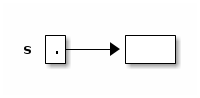
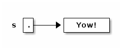
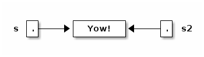

cs61b Lecture Notes
Table of Contents
1 Lecture 2
Friday, January 24, 2014
Today's reading: Sierra & Bates, Chapter 2; pp. 54-58, 154-160, 661, 669.
1.1 OBJECTS AND CONSTRUCTORS
String s; // Step 1: declare a String variable. s = new String(); // Steps 2, 3: construct new empty String; assign it to s.
At this point, s is a variable that references an "empty" String, i.e. a String containing zero characters.

String s = new String(); // Steps 1, 2, 3 combined. s = "Yow!"; // Construct a new String; make s a reference to it.

String s2 = s; // Copy the reference stored in s into s2.

Now s and s2 reference the same object.
s2 = new String(s); // Construct a copy of object; store reference in s2.

Now they refer to two different, but identical, objects.
Think about that. When Java executes that line, it does the following things, in the following order.
- Java looks inside the variables to see where it's pointing.
- Java follows the pointer to the String object.
- Java reads the characters stored in that String object.
- Java creates a new String object that stores a copy of those characters.
- Java stores a reference to the new String object in s2.
We've seen three String constructors:
- new String() constructs an empty string–it's a string, but it contains zero characters.
- "Yow!" constructs a string containing the characters Yow!.
- new String(s) takes a parameter s. Then it makes a copy of the object that s references.
Constructors always have the same name as their class, except the special constructor "stuffinquotes". That's the only exception.
Observe that "new String()" can take no parameters, or one parameter. These are two different constructors–one that is called by "new String()", and one that is called by "new String(s)". (Actually, there are many more than two–check out the online Java API to see all the possibilities.)
1.2 METHODS
Let's look at some methods that aren't constructors.
s2 = s.toUppercase(); // Create a string like s, but in all upper case.

String s3 = s2.concat("!!"); // Also written: s3 = s2 + "!!";

String s4 = "*".concat(s2).concat("*"); // Also written: s4 = "*" + s + "*";

Now, here's an important fact: when Java executed the line
s2 = s.toUppercase();
the String object "Yow!" did not change. Instead, s2 itself changed to reference a new object. Java wrote a new "pointer" into the variable s2, so now s2 points to a different object than it did before.
Unlike in C, in Java Strings are immutable–once they've been constructed, their contents never change. If you want to change a String object, you've got to create a brand new String object that reflects the changes you want. This is not true of all objects; most Java objects let you change their contents.
You might find it confusing that methods like "toUppercase" and "concat" return newly created String objects, though they are not constructors. The trick is that those methods calls constructors internally, and return the newly constructed Strings.
1.3 I/O Classes and Objects in Java
Here are some objects in the System class for interacting with a user:
System.out is a PrintStream object that outputs to the screen. System.in is an InputStream object that reads from the keyboard. [Reminder: this is shorthand for "System.in is a variable that references an InputStream object."]
But System.in doesn't have methods to read a line directly. There is a method called readLine that does, but it is defined on BufferedReader objects.
- How do we construct a BufferedReader? One way is with an InputStreamReader.
- How do we construct an InputStreamReader? We need an InputStream.
- How do we construct an InputStream? System.in is one.
(You can figure all of this out by looking at the constructors in the online Java libraries API–specifically, in the java.io library.)
Why all this fuss?
InputStream objects (like System.in) read raw data from some source (like the keyboard), but don't format the data.
InputStreamReader objects compose the raw data into characters (which are typically two bytes long in Java).
BufferedReader objects compose the characters into entire lines of text.
Why are these tasks divided among three different classes? So that any one task can be reimplemented (say, for improved speed) without changing the other two.
Here's a complete Java program that reads a line from the keyboard and prints it on the screen.
import java.io.*; class SimpleIO { public static void main(String[] arg) throws Exception { BufferedReader keybd = new BufferedReader(new InputStreamReader(System.in)); System.out.println(keybd.readLine()); } }
Don't worry if you don't understand the first three lines; we'll learn the underlying ideas eventually. The first line is present because to use the Java libraries, other than java.lang, you need to "import" them. java.io includes the InputStreamReader and BufferedReader classes.
The second line just gives the program a name, "SimpleIO".
The third line is present because any Java program always begins execution at a method named "main", which is usually defined more or less as above. When you write a Java program, just copy the line of code, and plan to understand it a few weeks from now.
1.4 Classes for Web Access
Let's say we want to read a line of text from the White House Web page. (The line will be HTML, which looks ugly. You don't need to understand HTML.)
How to read a line of text? With readLine on BufferedReader. How to create a BufferedReader? With an InputStreamReader. How to create a InputStreamReader? With an InputStream. How to create an InputStream? With a URL.
import java.net.*; import java.io.*; class WHWWW { public static void main(String[] arg) throws Exception { URL u = new URL("http://www.whitehouse.gov/"); InputStream ins = u.openStream(); InputStreamReader isr = new InputStreamReader(ins); BufferedReader whiteHouse = new BufferedReader(isr); System.out.println(whiteHouse.readLine()); } }
1.5 Postscript: Object-Oriented Terminology (not examinable)
In the words of Turing Award winner Nicklaus Wirth, "Object-oriented programming (OOP) solidly rests on the principles and concepts of traditional procedural programming. OOP has not added a single novel concept … along with the OOP paradigm came an entirely new terminology with the purpose of mystifying the roots of OOP." Here's a translation guide.
| Procedural Programming | Object-Oriented Programming |
|---|---|
| record / structure | object |
| record type | class |
| extending a type | declaring a subclass |
| procedure | method |
| procedure call | sending a message to the method [ack! phthhht!] |
I won't ever talk about "sending a message" in this class. I think it's a completely misleading metaphor. In computer science, message-passing normally implies asynchrony: that is, the process that sends a message can continue executing while the receiving process receives the message and acts on it. But that's NOT what it means in object-oriented programming: when a Java method "sends a message" to another method, the former method is frozen until the latter methods completes execution, just like with procedure calls in most languages. But you should probably know that this termology exists, much as it sucks, because you'll probably run into it sooner or later.
2 Lecture 3
Monday, January 27, 2014
Today's reading: Sierra & Bates, pp. 71-74, 76, 85, 240-249, 273-281, 308-309.
2.1 DEFINING CLASSES
An object is a repository of data. Fields are variables that hold the data stored in objects. Fields in objects are also known as instance variables. In Java, fields are addressed much like methods are, but fields never have parameters, and no parentheses appear after them. For example, suppose that amanda is a Human object. Then amanda.introduce() is a method call, and amanda.age is a field. Let's write a class definition for the Human class.
class Human { public int age; // The Human's age (an integer). public String name; // The Human's name. public void introduce() { // This is a _method definition_. System.out.println("I'm " + name + " and I'm " + age + " years old."); } }
"age" and "name" are both fields of a Human object. Now that we've defined the Human class, we can construct as many Human objects as we want. Each Human object we create can have different values of age and name. We might create amanda by executing the following code.
Human amanda = new Human(); // Create amanda. amanda.age = 6; // Set amanda's fields. amanda.name = "Amanda"; amanda.introduce(); // _Method call_ has amanda introduce herself.

The output is: I'm Amanda and I'm 6 years old.
Why is it that, inside the definition of introduce(), we don't have to write "amanda.name" and "amanda.age"? When we invoke "amanda.introduce()", Java remembers that we are calling introduce() on the object that "amanda" references. The methods defined inside the Human class remember that we're referring to amanda's name and age. If we had written "rishi.introduce()", the introduce method would print rishi's name and age instead. If we want to mix two or more objects, we can.
class Human { // Include all the stuff from the previous definition of Human here. public void copy(Human original) { age = original.age; name = original.name; } }
Now, "amanda.copy(rishi)" copies rishi's fields to amanda.
2.2 Constructors
Let's write a constructor, a method that constructs a Human. The constructor won't actually contain code that does the creating; rather, Java provides a brand new object for us right at the beginning of the constructor, and all you have to write (if you want) in the constructor is code to initialize the new object.
class Human { // Include all the stuff from the previous definitions here. public Human(String givenName) { age = 6; name = givenName; } }
Notice that the constructor is named "Human", and it returns an object of type "Human". This constructor is called whenever we write "new Human(s)", where s is a String reference. Now, we can shorten amanda's coming-out party to
Human amanda = new Human("Amanda"); amanda.introduce();
These lines accomplish precisely the same result as amanda's previous four lines.
You might ask…why were we able to create a Human object before we wrote a constructor? Java provides every class with a default constructor, which takes no parameters and does no initializing. Hence, when we wrote
Human amanda = new Human();
we created a new, blank Human. If the default constructor were explicitly written, it would look like this:
public Human() { }
Warning: if you write your own Human constructor, even if it takes parameters, the default constructor goes away. If you want to have the default constructor and another constructor, you must define both explicitly.
You can override the default constructor by explicitly writing your own constructor with no parameters.
class Human { // Include all the stuff from the previous definitions here. public Human() { age = 0; name = "Untitled"; } }
2.3 The "this" Keyword
A method invocation, like "amanda.introduce()", implicitly passes an object (in this example, amanda) as a parameter called "this". So we can rewrite our last constructor as follows without changing its meaning.
public Human() { this.age = 0; this.name = "Untitled"; }
In this case, "this" is optional. However, if the parameters or local variables of a method have the same name as the fields of an object, then the former have priority, and the "this" keyword is needed to refer to the object's fields.
public void change(int age) { String name = "Tom"; this.age = age; this.name = name; }
When we call "amanda.change(11)", "this" is assigned the same value as "amanda" before the change() method begins execution.
Now, when Java executes "this.age = age", it overwrites the 6 with an 11. When Java executes "this.name = name", it overwrites amanda's name as below.

A statement like "this = amanda;" will trigger a compile-time error.
2.4 The "static" Keyword
A static field is a single variable shared by a whole class of objects; its value does not vary from object to object. For example, if "numberOfHumans" is the number of Human objects that have been constructed, it is not appropriate for each object to have its own copy of this number; every time a new Human is created, we would have to update every Human.
If we declare a field "static", there is just one field for the whole class. Static fields are also called class variables.
class Human { public static int numberOfHumans; public int age; public String name; public Human() { numberOfHumans++; // The constructor increments the number by one. } }
If we want to look at the variable numberOfHumans from another class, we write it in the usual notation, but we prefix it with the class name rather than the name of a specific object.
int kids = Human.numberOfHumans / 4; // Good. int kids = amanda.numberOfHumans / 4; // This works too, but has nothing to // do with amanda specifically. Don't // do this; it's bad (confusing) style.
System.in and System.out are other examples of static fields.
Methods can be static too. A static method doesn't implicitly pass an object as a parameter.
class Human { ... public static void printHumans() { System.out.println(numberOfHumans); } }
Now, we can call "Human.printHumans()" from another class. We can also call "amanda.printHumans()", and it works, but it's bad style, and amanda will NOT be passed along as "this".
The main() method is always static, because when we run a program, we are not passing an object in.

Any attempt to reference "this" will cause a compile-time error.
2.5 Lifetimes of Variables
- A local variable (declared in a method) is gone forever as soon as the method in which it's declared finishes executing. (If it references an object, the object might continue to exist, though.)
- An instance variable (non-static field) lasts as long as the object exists. An object lasts as long as there's a reference to it.
- A class variable (static field) lasts as long as the program runs.
3 Lecture 4
Wednesday, January 29, 2014
Today's reading: S&B pp. 10-14, 49-53, 75, 78-79, 86, 117, 286-287, 292, 660.
3.1 PRIMITIVE TYPES
Not all variables are references to objects. Some variables are primitive types, which store values like "3", "7.2", "h", and "false". They are:
| byte: | A 8-bit integer in the range -128…127. (One bit is the sign.) |
| short: | A 16-bit integer in the range -32768…32767. |
| int: | A 32-bit integer in the range -2147483648…2147483647. |
| long: | A 64-bit integer, range -9223372036854775808…9223372036854775807. |
| double: | A 64-bit floating-point number like 18.355625430920409. |
| float: | A 32-bit floating-point number; has fewer digits of precision. |
| boolean: | "true" or "false". |
| char: | A single character. |
long values are written with an L on the end: long x = 43L; This tells the compiler to internally write out "43" in a 64-bit format. double and float values must have a decimal point: double y = 18.0; float values are written with an f at the end: float f = 43.9f;
| Object types | Primitive types | |
|---|---|---|
| Variable contains a | reference | value |
| How defined? | class definition | built into Java |
| How created? | "new" | "6", "3.4", "true" |
| How initialized? | constructor | default (usually zero) |
| How used? | methods | operators ("+", "*", etc.) |
Operations on int, long, short, and byte types.
-x x * y x + y x / y <-- rounds toward zero (drops the remainder). x - y x % y <-- calculates the remainder of x / y.
Except for "%", these operations are also available for doubles and floats. Floating-point division ("/") doesn't round to an integer, but it does round off after a certain number of bits determined by the storage space.
The java.lang library has more operations in…
- the Math class.
x = Math.abs(y); // Absolute value. Also see Math.sqrt, Math.sin, etc.
- the Integer class.
int x = Integer.parseInt("1984"); // Convert a string to a number.
- the Double class.
double d = Double.parseDouble("3.14");
Converting types: integers can be assigned to variables of longer types.
int i = 43; long l = 43; // Okay, because longs are a superset of ints. l = i; // Okay, because longs are a superset of ints. i = l; // Compiler ERROR. i = (int) l; // Okay.
The string "(int)" is called a cast, and it casts the long into an int. In the process, high bits will be lost if l does not fit in the range -2147483648… 2147483647 Java won't let you compile "i = l" because it's trying to protect you from accidentally creating a nonsense value and a hard-to-find bug. Java requires you to explicitly cast longs to ints to show your acknowledgment that you may be destroying information.
Similarly, "float f = 5.5f; double d = f;" is fine, but you need an explicit cast for "double d = 5.5; float f = (float) d;". Integers (even longs) can be directly assigned to floating-point variables (even floats) without a cast, but the reverse requires a cast because the number is truncated to an integer.
3.2 Boolean Values
A boolean value is either "true" or "false". Booleans have operations of their own, signified "&&" (and), "||" (or), and "!" (not).
a | b || a && b | a || b | !a ==================||============================== false | false || false | false | true false | true || false | true | true | false || false | true | false true | true || true | true |
Boolean values can be specified directly ("true", "false") or be created by the comparison operators "==", "<", ">", "<=", ">=", "!=" (not equal to).
boolean x = 3 == 5; // x is now false. x = 4.5 >= 4.5; // x is now true. x = 4 != 5 - 1; // x is now false. x = false == (3 == 0); // x is now true.
3.3 CONDITIONALS
An "if" statement uses a boolean expression to decide whether to execute a set of statements. The form is
if (boolValue) {
statements;
}
The statements are executed if and only if "boolValue" is "true". The parentheses around the boolean expression are required (for no good reason).
boolean pass = score >= 75; if (pass) { output("You pass CS 61B"); } else { // The following line executes if and only if score < 75. output("You are such an unbelievable loser"); }
if-then-else clauses can be (1) nested and (2) daisy-chained. Nesting allows you to build decision trees. Daisy-chaining allows you to present more than two alternatives. For instance, suppose you want to find the maximum of three numbers.
if (x > y) { if (x > z) { maximum = x; } else { maximum = z; } } else if (y > z) { maximum = y; } else { maximum = z; }
Some long chains of if-then-else clauses can be simplified by using a "switch" statement. "switch" is appropriate only if every condition tests whether a variable x is equal to some constant.
switch (month) { | if (month == 2) { case 2: | days = 28; days = 28; | } else if ((month == 4) || (month == 6) || break; | (month == 9) || (month == 11)) { case 4: | days = 30; case 6: | } else { case 9: | days = 31; case 11: | } days = 30; | break; default: days = 31; break; } // These two code fragments do exactly the same thing.
IMPORTANT: "break" jumps to the end of the "switch" statement. If you forget a break statement, the flow of execution will continue right through past the next "case" clause, which is why cases 4, 6, and 9 work right. If month == 12 in the following example, both Strings are printed.
switch (month) { case 12: output("It's December."); // Just keep moving right on through. case 1: case 2: case 11: output("It's cold."); }
However, this is considered bad style, because it's hard to read and understand. If there's any chance that other people will need to read or modify your code (which is the norm when you program for a business), don't code it like this. Use break statements in the switch, and use subroutines to reuse code and clarify the control flow.
Observe that the last example doesn't have a "default:" case. If "month" is not 1 nor 2 nor 11 nor 12, Java jumps right to the end of the "switch" statement (just past the closing brace) and continues execution from there.
3.4 THE "return" KEYWORD
Like conditionals, "return" affects the flow of control of a program. It causes a method to end immediately, so that control returns to the calling method.
Here's a recursive method that prints the numbers from 1 to x.
public static void oneToX(int x) { if (x < 1) { return; } oneToX(x - 1); System.out.println(x); }
The return keyword serves a dual purpose: it is also the means by which a function returns a value. A function is a method that is declared to return a non-void type. For instance, here's a function that returns an int.
public int daysInMonth(int month) { switch (month) { case 2: return 28; case 4: case 6: case 9: case 11: return 30; default: return 31; } }
The "return" value can be an expression. Some examples:
return x + y - z; return car.velocity(time);